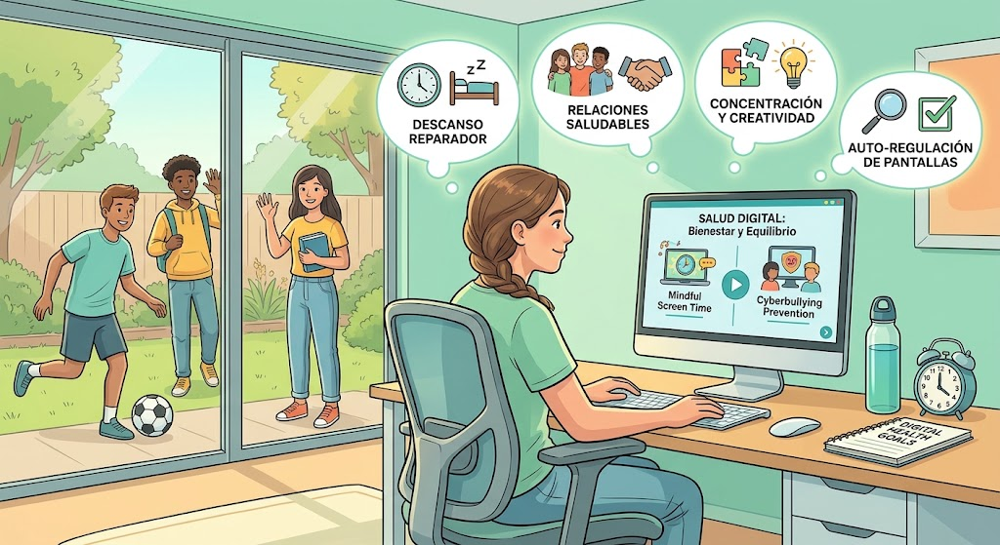

El uso excesivo de pantallas en la juventud
El uso no regulado del teléfono en los adolescentes es un problema cada vez más común, ya que muchos jóvenes pasan demasiado tiempo utilizando redes sociales, videojuegos y aplicaciones.
Consecuencias sobre el uso no regulado del teléfono en adolescentes
Aunque el celular es una herramienta útil para estudiar, comunicarse o buscar información, su uso excesivo puede tener consecuencias negativas en la vida cotidiana. Una de las principales consecuencias es el bajo rendimiento escolar porque los estudiantes pueden distraerse durante las clases o al realizar sus tareas. También puede provocar la falta de sueño, cansancio, dolores de cabeza y molestias en la vista.
Además, pasar muchas horas frente a la pantalla puede disminuir la convivencia con la familia y los amigos, causar aislamiento social y generar ansiedad por estar revisando constantemente notificaciones o redes sociales.
Trastornos del Sueño y Uso Nocturno:

El uso del teléfono antes de dormir interrumpe el descanso y provoca fatiga al día siguiente.
Riesgos en Internet y Recomendaciones:
Otro problema es el acceso a contenidos inapropiados, el ciberacoso y los riesgos relacionados con compartir información personal en internet. Por esa razón, es importante que los adolescentes aprendamos a utilizar el teléfono celular de manera responsable:
- Establecer horarios de uso diario.
- Evitar usar el teléfono antes de dormir.
- Dedicar tiempo a realizar actividades físicas, estudiar y convivir con otras personas.
Impacto en la Convivencia Social:
El aislamiento social ocurre cuando preferimos las pantallas sobre las pláticas en persona.
Para conocer más sobre los efectos del uso excesivo de dispositivos, puedes consultar la Wikipedia en Español.
Nivel de Riesgo según el Tiempo de Uso Diario:
| Horas Diarias | Nivel de Riesgo | Principales Efectos Observados |
|---|---|---|
| 1 - 2 horas | Bajo / Balanceado | Uso responsable para tareas, entretenimiento breve y comunicación. |
| 3 - 5 horas | Moderado | Fatiga visual leve, menor tiempo para actividades físicas o tareas. |
| Más de 5 horas | Alto / Crítico | Insomnio, bajón académico, ansiedad y dependencia del dispositivo. |
Música de Fondo / Pista Informativa:
Escucha la pista del proyecto mientras navegas: